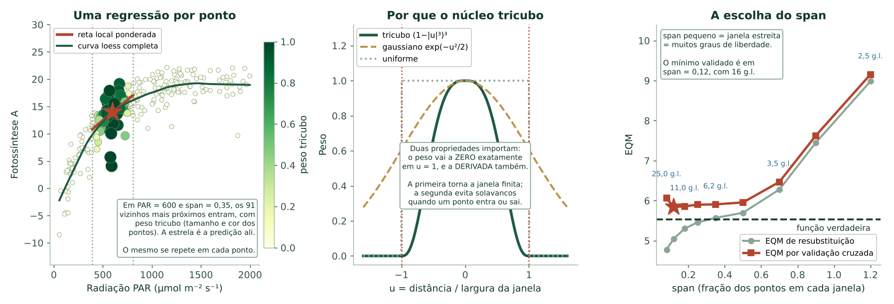
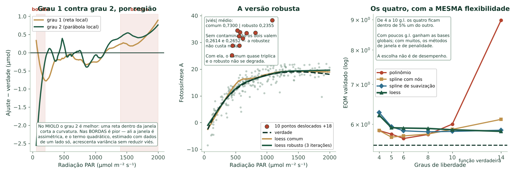

Regressão local (LOESS)
Faz uma regressão própria em cada ponto, usando só os vizinhos e dando mais peso aos mais próximos — o suavizador que não produz fórmula, e o melhor instrumento de diagnóstico do grupo.
Comece por aqui
As três fichas anteriores ajustaram uma função global aos dados — um polinômio, uma spline, uma spline penalizada. O LOESS não ajusta função nenhuma. Para cada ponto onde se quer uma predição, faz-se uma regressão própria, usando apenas os vizinhos e dando mais peso aos mais próximos. O resultado é uma curva, não uma equação.
Cleveland (1979) chamou o procedimento de locally weighted scatterplot smoothing, abreviado lowess. A versão posterior, estendida por Cleveland e Devlin (1988) para várias preditoras e com teoria de inferência aproximada, ficou conhecida como loess. No R as duas existem: lowess() é a antiga, serve para desenhar e nada mais; loess() é a completa, com predict, graus de liberdade e intervalos.
O que é a regressão local
Para prever em \(x_0\): tomam-se os \(q=\lceil\text{span}\cdot n\rceil\) pontos mais próximos, atribuem-se pesos que decrescem com a distância, ajusta-se por mínimos quadrados ponderados uma reta (ou parábola) só naqueles pontos, e a predição é o valor dessa reta em \(x_0\). Repete-se em cada ponto onde se quer a curva.

O procedimento, em números, no ponto PAR = 600
| Vizinho | PAR | Distância a 600 | Peso tricubo |
|---|---|---|---|
| 1º | 604,2 | 4,2 | 1,0000 |
| 2º | 609,0 | 9,0 | 0,9998 |
| 3º | 588,9 | 11,1 | 0,9995 |
| 11º | 570,6 | 29,4 | 0,9916 |
| 31º | 666,1 | 66,1 | 0,9077 |
| 61º | 458,0 | 142,0 | 0,3214 |
| 82º | 416,8 | 183,2 | 0,0339 |
| 90º | 393,1 | 206,9 | 0,0000 |
| 91º | 808,7 | 208,7 | 0,0000 |
O 91º vizinho está a 208,7 μmol de distância: essa é a largura da janela, e o peso dele é exatamente zero, como manda o tricubo. A soma dos 91 pesos é 52,75 — isto é, em termos efetivos a reta é ajustada ao equivalente de 53 observações, não de 91.
A reta local ajustada nesses 91 pontos, com esses pesos, tem intercepto 13,9515 — que é a predição em PAR = 600 — e inclinação 0,014925 μmol por μmol de radiação. A função verdadeira ali vale 14,0038, de modo que o erro neste ponto é de 0,05 μmol.
Pressupostos e como verificá-los
| Pressuposto | Por que importa | Como verificar |
|---|---|---|
| Relação suave em escala local | Uma reta deve servir dentro da janela. | Reduza o span onde a curvatura for forte. |
| Dados suficientes em toda a faixa | Janela sem pontos não tem ajuste. | Histograma de x; cuidado com caudas. |
| Variância do erro constante | Os pesos são só de distância, não de precisão. | Resíduos contra ajustados; ou use weights. |
| Erros independentes | A validação do span supõe isso. | Com séries temporais, valide por blocos. |
| Nenhuma extrapolação | Fora do domínio não existem vizinhos. | O R devolve NA por padrão; não force. |
| span escolhido e reportado | É o único parâmetro, e muda tudo. | Validação cruzada; reporte o valor. |
| span fixado antes, se houver inferência | Escolhê-lo olhando y invalida os testes. | Fixe-o, ou não reporte valores-p. |
| Observações aberrantes consideradas | A versão comum é arrastada por elas. | family = "symmetric". |
O span é uma fração dos pontos, não uma largura fixa, de modo que a janela se estreita onde há muitos dados e se alarga onde há poucos. Isso é geralmente desejável: mantém o número de pontos por ajuste constante. Mas quando a densidade varia muito, a janela nas regiões vazias pode ficar larga demais e achatar estrutura real. O diagnóstico é olhar a largura efetiva da janela ao longo do domínio — nestes dados ela vai de cerca de 100 μmol no miolo a mais de 300 μmol no extremo direito.
Formulação e cálculo
Para cada ponto de interesse \(x_0\):
Em que:
- \(N(x_0)\)
- os \(q\) vizinhos mais próximos de \(x_0\)
- \(\Delta_q(x_0)\)
- a distância ao \(q\)-ésimo vizinho: a largura da janela
- \(W\)
- o núcleo tricubo
- \(d\)
- o grau local, 1 ou 2
- \(q\)
- \(\lceil\text{span}\cdot n\rceil\)
O ajuste é linear em y, como o da spline de suavização: existe uma matriz \(L\) tal que \(\hat f=Ly\), e os graus de liberdade efetivos são \(\operatorname{tr}(L)\). É por isso que o summary do loess imprime um "número equivalente de parâmetros".
Por que o núcleo tricubo
| u | Tricubo | Gaussiano | Uniforme |
|---|---|---|---|
| 0,00 | 1,0000 | 1,0000 | 1 |
| 0,20 | 0,9762 | 0,9802 | 1 |
| 0,40 | 0,8200 | 0,9231 | 1 |
| 0,60 | 0,4819 | 0,8353 | 1 |
| 0,80 | 0,1162 | 0,7261 | 1 |
| 0,95 | 0,0029 | 0,6368 | 1 |
| 1,00 | 0,0000 | 0,6065 | 1 |
| 1,20 | 0,0000 | 0,4868 | 0 |
Duas propriedades decidem a escolha. O peso vai a zero exatamente em \(u=1\), de modo que a janela é finita e pontos distantes não entram — o gaussiano nunca zera, e isso o torna caro e sensível a caudas. E a derivada do tricubo também se anula em \(u=1\), de modo que a curva não dá solavancos quando um ponto entra ou sai da janela — o uniforme zera de forma abrupta e produz degraus visíveis.
A versão robusta
Depois do primeiro ajuste, calculam-se os resíduos \(r_i\) e os pesos de robustez:
O ajuste é refeito com pesos \(w_i\delta_i\), e o ciclo se repete duas ou três vezes. Um ponto a mais de 6 desvios absolutos medianos recebe peso zero e sai do cálculo.
Propriedades
- Não existe função ajustada: existe um procedimento de predição.
- O ajuste é linear em \(y\); os g.l. efetivos são \(\operatorname{tr}(L)\).
- span pequeno = janela estreita = muitos graus de liberdade.
- span > 1 é permitido: todos os pontos entram, com pesos de uma janela maior.
- O grau 1 tem menos variância; o grau 2 acompanha melhor a curvatura no miolo.
- A versão robusta custa quase nada quando não há aberrantes.
- Não extrapola: fora do domínio não há vizinhos.
- O custo cresce com \(n\): uma regressão por ponto de predição.
Como interpretar os resultados
| Elemento | O que informa | Cuidado |
|---|---|---|
| O gráfico da curva | O resultado, e o que se publica. | Sempre com os pontos por trás. |
$trace.hat | Graus de liberdade efetivos. | Comparável aos g.l. dos outros métodos. |
summary(m) | "equivalent number of parameters". | É o mesmo tr(L). |
$s | Desvio-padrão residual. | Otimista se o span foi escolhido olhando y. |
predict(…, se = TRUE) | Erro-padrão aproximado. | Supõe o span fixado antes. |
anova(m1, m2) | Teste F aproximado entre spans. | Mesma ressalva. |
| span | O parâmetro. | Reporte-o sempre: sem ele o resultado não é reprodutível. |
O que se reporta
Um resultado de LOESS se reporta com três coisas: o gráfico da curva sobre os pontos, o span e o grau. Sem os dois últimos a análise não é reprodutível, e é comum vê-los omitidos. Se a curva vai embasar alguma conclusão quantitativa — um ponto de máximo, uma diferença entre dois níveis de \(x\) — essa quantidade deve vir com incerteza, obtida por bootstrap.
O uso mais comum e mais defensável do LOESS não é modelar: é olhar. Uma curva LOESS sobre um gráfico de resíduos contra ajustados mostra curvatura que o olho não pega; sobre um gráfico de dispersão, sugere a forma antes de qualquer ajuste; sobre resíduos contra uma preditora omitida, denuncia a omissão. Nesses usos o span não precisa ser validado com rigor — basta que a curva não esteja nem rígida demais nem perseguindo ruído — e não há inferência a proteger.
Como executar no R e em Python
Onde executar o código em Python
Não é preciso instalar nada: o Google Colab é um computador na nuvem, gratuito, que executa Python pelo navegador e já traz as bibliotecas usadas aqui (numpy, scipy e matplotlib).
loess(y ~ x, span = 0.35, degree = 1) faz o ajuste. O span é a fração dos pontos em cada janela e o degree é 1 ou 2 (o padrão é 2). family = "symmetric" liga a reponderação robusta de Cleveland; o padrão, "gaussian", não a usa. O objeto traz $trace.hat com os graus de liberdade efetivos e $s com o desvio residual, e summary() imprime o "equivalent number of parameters".
Dois detalhes importam na prática. O argumento control = loess.control(surface = "direct") faz a conta exata em todos os pontos, enquanto o padrão "interpolate" avalia o ajuste em poucos pontos e interpola — muito mais rápido, e necessário para \(n\) grande, mas pode diferir ligeiramente. E predict devolve NA fora do domínio por padrão, o que é um recurso e não um defeito: não force a extrapolação. A função lowess(), mais antiga, serve só para desenhar: não aceita newdata nem produz erro-padrão.
m <- loess(A ~ par, data = fot, span = 0.35, degree = 1)
summary(m) # "equivalent number of parameters" = tr(L)
m$trace.hat
plot(A ~ par, data = fot, pch = 16, col = "#8aa59680")
gx <- seq(min(fot$par), max(fot$par), length = 300)
lines(gx, predict(m, newdata = data.frame(par = gx)), lwd = 3)
Exemplo de aplicação
Contexto dos dados
Os dados são fictícios e foram criados pelo autor: 260 medições de trocas gasosas em folhas de cafeeiro. A resposta é a fotossíntese líquida \(A\) (μmol CO₂ m⁻² s⁻¹) e as três preditoras são a radiação PAR (μmol m⁻² s⁻¹, de 57 a 1.998), a temperatura foliar (°C, de 11,3 a 38,3) e o déficit de pressão de vapor VPD (kPa, de 0,30 a 2,45). O processo gerador é conhecido: \(A=\alpha+f_1(\text{PAR})+f_2(\text{temp})+f_3(\text{VPD})+\varepsilon\), com erro de desvio-padrão 1,30. A curva de luz \(f_1\) sobe depressa, satura e cai um pouco por fotoinibição acima de 1.000 μmol; \(f_2\) tem ótimo em 27 °C; \(f_3\) é um declínio convexo. Saber as funções verdadeiras permite medir o viés de cada método — o que, em dados reais, nunca é possível. O mesmo conjunto atravessa as cinco fichas do grupo.
Código em R
# Regressão local (LOESS): exemplo completo ----
# Pacotes: nenhum (loess e lowess sao do R base)
# Dados fictícios: 260 medições de trocas gasosas em folhas de cafeeiro.
# O arquivo fotossintese.csv acompanha o site, na pasta scripts/.
fot <- read.csv("fotossintese.csv")
str(fot) # A (umol CO2 m-2 s-1), par, temp, vpd
summary(fot)
plot(A ~ par, data = fot, pch = 16, col = "#8aa59680",
xlab = "PAR (umol m-2 s-1)", ylab = "A (umol CO2 m-2 s-1)")
# O ponto de partida: quanto o modelo LINEAR deixa na mesa
summary(lm(A ~ par + temp + vpd, data = fot))$r.squared # 0,6747
# O processo gerador verdadeiro daria R² = 0,9514. É esse buraco que o
# grupo inteiro de fichas tenta preencher.
# ---- 1. O ajuste, e o que o span faz
m <- loess(A ~ par, data = fot, span = 0.35, degree = 1)
summary(m) # traz "equivalent number of parameters": os g.l. efetivos
plot(A ~ par, data = fot, pch = 16, col = "#8aa59680")
gx <- seq(min(fot$par), max(fot$par), length.out = 300)
for (sp in c(0.12, 0.35, 0.90)) {
mm <- loess(A ~ par, data = fot, span = sp, degree = 1)
lines(gx, predict(mm, newdata = data.frame(par = gx)), lwd = 2)
}
# ---- 2. A ESCOLHA DO SPAN por validação cruzada
# O loess nao tem cv.glm pronto; faz-se a mao.
set.seed(1)
for (sp in c(0.08, 0.12, 0.18, 0.25, 0.35, 0.5, 0.7, 0.9, 1.2)) {
d <- sample(rep(1:10, length.out = nrow(fot))); er <- numeric(nrow(fot))
for (j in 1:10) {
mm <- loess(A ~ par, data = fot[d != j, ], span = sp, degree = 1,
control = loess.control(surface = "direct"))
er[d == j] <- fot$A[d == j] - predict(mm, newdata = fot[d == j, ]) }
gl <- loess(A ~ par, data = fot, span = sp, degree = 1)$trace.hat
cat(sprintf("span %.2f: %3d vizinhos, %5.2f g.l., EQM 10-fold %.4f\n",
sp, ceiling(sp*nrow(fot)), gl, mean(er^2)))
}
# ---- 3. GRAU 1 contra GRAU 2
for (sp in c(0.15, 0.25, 0.35, 0.5, 0.7)) {
e <- sapply(1:2, function(g) {
d <- sample(rep(1:10, length.out = nrow(fot))); er <- numeric(nrow(fot))
for (j in 1:10) {
mm <- loess(A ~ par, data = fot[d != j, ], span = sp, degree = g,
control = loess.control(surface = "direct"))
er[d == j] <- fot$A[d == j] - predict(mm, newdata = fot[d == j, ]) }
mean(er^2) })
cat(sprintf("span %.2f: grau 1 %.4f | grau 2 %.4f\n", sp, e[1], e[2]))
}
# ---- 4. A VERSÃO ROBUSTA
# family = "symmetric" liga a reponderacao bisquare de Cleveland.
set.seed(19)
fot2 <- fot
idx <- sample(which(fot$par > 400 & fot$par < 1200), 10)
fot2$A[idx] <- fot2$A[idx] + 18 # 10 pontos deslocados
m_g <- loess(A ~ par, data = fot2, span = .35, degree = 1, family = "gaussian")
m_s <- loess(A ~ par, data = fot2, span = .35, degree = 1, family = "symmetric")
plot(A ~ par, data = fot2, pch = 16, col = "#8aa59680")
points(fot2$par[idx], fot2$A[idx], pch = 16, col = "#b5442f")
lines(gx, predict(m_g, data.frame(par = gx)), col = "#bf924c", lwd = 3)
lines(gx, predict(m_s, data.frame(par = gx)), col = "#1f5b43", lwd = 3)
# O ajuste comum e arrastado; o robusto praticamente nao se move.
# ---- 5. O QUE O LOESS NÃO TEM
# (a) formula: nao ha equacao para reportar, so a curva.
# (b) extrapolacao: fora do dominio o R devolve NA por padrao.
predict(m, newdata = data.frame(par = c(1990, 2100, 2400)))
# (c) custo: uma regressao por ponto de predicao. O padrao
# surface = "interpolate" avalia o ajuste exato em poucos pontos
# e interpola; surface = "direct" faz a conta em todos.
system.time(loess(A ~ par, data = fot, span = .35,
control = loess.control(surface = "direct")))
# (d) nao ha valor-p padronizado. Ha um teste F aproximado entre
# ajustes aninhados, que supoe o span FIXADO antes de ver os dados:
anova(loess(A ~ par, data = fot, span = .7, degree = 1),
loess(A ~ par, data = fot, span = .3, degree = 1))
# ---- 6. lowess: a versão mais antiga e mais simples
# Serve para o grafico exploratorio e nada mais: nao aceita newdata,
# nao faz predicao, nao tem erro-padrao.
plot(A ~ par, data = fot, pch = 16, col = "#8aa59680")
lines(lowess(fot$par, fot$A, f = 0.35), col = "#b5442f", lwd = 3)
A mesma análise em Python, com os resultados
Cole o código em um notebook do Google Colab ↗ e execute com Shift+Enter. Os valores abaixo são a saída desse código.
import numpy as np, sys, time
# ------------------------------------------------------------------
# Bloco comum às fichas deste grupo: funções auxiliares e dados (cab15)
# ------------------------------------------------------------------
import numpy as np
# ------------------------------------------------------------------
# Bloco comum às fichas deste grupo: funções auxiliares e dados (dados15)
# ------------------------------------------------------------------
import numpy as np
import pandas as pd
def le_csv(nome):
"""Lê o arquivo de dados da ficha: primeiro na pasta atual; se não
estiver lá (por exemplo, no Google Colab), direto do site."""
try:
return pd.read_csv(nome)
except FileNotFoundError:
return pd.read_csv('https://cassiushenrique.github.io/ModelosEstatisticos/scripts/' + nome)
# Dados fictícios: 260 medições de trocas gasosas (arquivo fotossintese.csv)
fot = le_csv('fotossintese.csv')
PAR=fot['par'].to_numpy(float); TEMP=fot['temp'].to_numpy(float)
VPD=fot['vpd'].to_numpy(float); A=fot['A'].to_numpy(float)
NG=len(A)
SIG=1.30
INT=14.0
def f_par(x):
x=np.asarray(x,float)
return 26.0*(1-np.exp(-0.0024*x))-1.9e-6*np.maximum(x-1000,0)**2
def f_temp(t): t=np.asarray(t,float); return -0.042*(t-27.0)**2
def f_vpd(v): v=np.asarray(v,float); return -2.9*v+0.33*v**2
C1=19.9605909253; C2=-1.4311050277; C3=-2.0245067433
def verdade(x,t,v): return INT+(f_par(x)-C1)+(f_temp(t)-C2)+(f_vpd(v)-C3)
# ------------------------------------------------------------------ fim do bloco comum
# ------------------------------------------------------------------ utilidades
def c(v, d=4): return ('%.*f' % (d, v)).replace('.', ',')
def eqm(o, p): return float(np.mean((np.asarray(o) - np.asarray(p))**2))
def sqr(o, p): return float(np.sum((np.asarray(o) - np.asarray(p))**2))
def r2(o, p): return 1 - sqr(o, p)/float(np.sum((np.asarray(o) - np.mean(o))**2))
def dobras(n, k, seed):
rg = np.random.default_rng(seed)
d = np.tile(np.arange(k), int(np.ceil(n/k)))[:n]; rg.shuffle(d); return d
def cv_uni(ajusta, x, y, k=10, seed=0, reps=1):
"""EQM por validação cruzada para um suavizador univariado.
ajusta(xtr, ytr, xte) -> predições em xte."""
tot = []
for r in range(reps):
d = dobras(len(y), k, seed + 991*r); e = np.empty(len(y))
for j in range(k):
tr, te = d != j, d == j
e[te] = y[te] - ajusta(x[tr], y[tr], x[te])
tot.append(float(np.mean(e**2)))
return float(np.mean(tot)), (float(np.std(tot, ddof=1)) if reps > 1 else 0.0)
# ------------------------------------------------------------------ polinômios
def poli(x, g, xr=None):
"""Base polinomial ORTOGONAL (Legendre reescalada ao intervalo de xr)."""
x = np.asarray(x, float); xr = x if xr is None else np.asarray(xr, float)
a, b = xr.min(), xr.max()
z = 2*(x - a)/(b - a) - 1
return np.polynomial.legendre.legvander(z, g)
def poli_cru(x, g):
x = np.asarray(x, float)
return np.column_stack([x**j for j in range(g+1)])
# ------------------------------------------------------------------ B-splines
def bspline(x, nos, grau=3):
"""Base B-spline por Cox-de Boor. 'nos' = vetor de nós INTERNOS."""
x = np.asarray(x, float); nos = np.asarray(nos, float)
a, b = bspline.lim
t = np.concatenate([[a]*(grau+1), nos, [b]*(grau+1)])
m = len(t) - grau - 1
B = np.zeros((len(x), m))
for i in range(m):
B[:, i] = (x >= t[i]) & (x < t[i+1])
B[np.isclose(x, b), m-1] = 1.0
for d in range(1, grau+1):
Bn = np.zeros((len(x), len(t) - d - 1))
for i in range(Bn.shape[1]):
den1 = t[i+d] - t[i]; den2 = t[i+d+1] - t[i+1]
a1 = (x - t[i])/den1*B[:, i] if den1 > 0 else 0.0
a2 = (t[i+d+1] - x)/den2*B[:, i+1] if den2 > 0 else 0.0
Bn[:, i] = a1 + a2
B = Bn
return B
def base_bs(x, nos, grau=3, lim=None):
bspline.lim = lim if lim is not None else (float(np.min(x)), float(np.max(x)))
return bspline(x, nos, grau)
def trunc_pot(x, nos, grau=3):
"""Base de potências truncadas: 1, x, ..., x^g, (x-k)_+^g."""
x = np.asarray(x, float)
cols = [x**j for j in range(grau+1)]
for k in np.asarray(nos, float):
cols.append(np.maximum(x - k, 0.0)**grau)
return np.column_stack(cols)
def natural_cs(x, nos, lim):
"""Base de spline cúbica NATURAL (linear fora dos nós de fronteira)."""
x = np.asarray(x, float); K = np.concatenate([[lim[0]], np.asarray(nos, float), [lim[1]]])
k = len(K)
def d(j):
return (np.maximum(x - K[j], 0)**3 - np.maximum(x - K[k-1], 0)**3)/(K[k-1] - K[j])
cols = [np.ones_like(x), x] + [d(j) - d(k-2) for j in range(k-2)]
return np.column_stack(cols)
def ajusta_base(B, y):
return np.linalg.lstsq(B, y, rcond=None)[0]
# --------------------------------------------------- spline de suavização
def suav_spline(x, y, lam, escala=True):
"""Spline cúbica de suavização EXATA, pelo algoritmo de Reinsch
(Green e Silverman, 1994, cap. 2). Resolve o sistema BANDADO
(R + lam Q' W^-1 Q) gama = Q' ybar , ajustado = ybar - lam W^-1 Q gama
que é numericamente muito mais estável que inverter (W + lam K).
Com escala=True, x é levado a [0, 1] antes de penalizar, de modo que lambda
tenha o mesmo significado para variáveis de unidades diferentes — é o que o
smooth.spline faz por trás do argumento spar.
Devolve (ajustados, x únicos na escala original, contagens, médias, g.l. efetivos)."""
x = np.asarray(x, float); y = np.asarray(y, float)
a0, b0 = (x.min(), x.max()) if escala else (0.0, 1.0)
xs = (x - a0)/(b0 - a0) if escala else x
xo_s, inv = np.unique(np.round(xs, 12), return_inverse=True)
m = len(xo_s)
xo = xo_s*(b0 - a0) + a0 if escala else xo_s
cont = np.bincount(inv, minlength=m).astype(float)
ybar = np.bincount(inv, weights=y, minlength=m)/cont
h = np.diff(xo_s)
Q = np.zeros((m, m-2)); R = np.zeros((m-2, m-2))
for j in range(1, m-1):
Q[j-1, j-1] = 1/h[j-1]; Q[j, j-1] = -1/h[j-1] - 1/h[j]; Q[j+1, j-1] = 1/h[j]
R[j-1, j-1] = (h[j-1] + h[j])/3
if j < m-2:
R[j-1, j] = h[j]/6; R[j, j-1] = h[j]/6
Winv = 1.0/cont
M = R + lam*(Q.T*Winv) @ Q
gama = np.linalg.solve(M, Q.T @ ybar)
aj = ybar - lam*Winv*(Q @ gama)
# g.l. efetivos = tr(S) = m - lam * tr( W^-1 Q M^-1 Q' )
tr = m - lam*float(np.sum(Winv*np.einsum('ij,ji->i', Q, np.linalg.solve(M, Q.T))))
return aj, xo, cont, ybar, tr
def ss_edf(x, lam):
return suav_spline(x, np.zeros(len(x)), lam)[4]
def ss_gcv(x, y, lam):
aj, xo, cont, ybar, tr = suav_spline(x, y, lam)
n = len(y)
res = np.asarray(y, float) - np.interp(x, xo, aj)
return float(np.sum(res**2)/n)/((1 - tr/n)**2), tr
def ss_prev(x, y, lam, xnovo):
aj, xo, cont, ybar, tr = suav_spline(x, y, lam)
# extrapolação LINEAR fora do domínio, como manda a spline natural
d0 = (aj[1]-aj[0])/(xo[1]-xo[0]); d1 = (aj[-1]-aj[-2])/(xo[-1]-xo[-2])
xn = np.asarray(xnovo, float); out = np.interp(xn, xo, aj)
out = np.where(xn < xo[0], aj[0] + d0*(xn - xo[0]), out)
out = np.where(xn > xo[-1], aj[-1] + d1*(xn - xo[-1]), out)
return out
# ------------------------------------------------------------------ LOESS
def tricubo(u): return (1 - np.abs(u)**3)**3
def loess(x, y, xnovo, span=0.35, grau=1, iteracoes=0):
"""Regressão local ponderada (Cleveland, 1979).
iteracoes > 0 ativa a reponderação robusta bisquare: os pesos de robustez
são sempre calculados a partir dos resíduos NOS PONTOS DE AJUSTE x, e não
nos pontos onde se quer prever."""
x = np.asarray(x, float); y = np.asarray(y, float); xn = np.asarray(xnovo, float)
n = len(x); q = max(grau + 2, int(np.ceil(span*n)))
def ajusta_em(alvos, rob):
out = np.empty(len(alvos))
for i, x0 in enumerate(alvos):
dd = np.abs(x - x0); ord_ = np.argsort(dd); viz = ord_[:q]
dmax = dd[viz[-1]]
w = tricubo(dd[viz]/dmax) if dmax > 0 else np.ones(q)
w = w*rob[viz]
Z = np.column_stack([(x[viz] - x0)**j for j in range(grau+1)])
WZ = Z*w[:, None]
try: b = np.linalg.solve(Z.T @ WZ, WZ.T @ y[viz])
except np.linalg.LinAlgError: b = np.linalg.lstsq(Z.T @ WZ, WZ.T @ y[viz], rcond=None)[0]
out[i] = b[0]
return out
rob = np.ones(n)
for _ in range(iteracoes):
aj = ajusta_em(x, rob) # SEMPRE nos x de ajuste
res = y - aj
s = np.median(np.abs(res))
rob = np.clip(1 - (res/(6*s))**2, 0, None)**2 if s > 0 else np.ones(n)
return ajusta_em(xn, rob)
def loess_edf(x, span=0.35, grau=1):
"""Graus de liberdade efetivos: traço da matriz suavizadora."""
x = np.asarray(x, float); n = len(x); q = max(grau + 2, int(np.ceil(span*n)))
tr = 0.0
for i, x0 in enumerate(x):
dd = np.abs(x - x0); ord_ = np.argsort(dd); viz = ord_[:q]
dmax = dd[viz[-1]]
w = tricubo(dd[viz]/dmax) if dmax > 0 else np.ones(q)
Z = np.column_stack([(x[viz] - x0)**j for j in range(grau+1)])
WZ = Z*w[:, None]
try: li = np.linalg.solve(Z.T @ WZ, WZ.T)
except np.linalg.LinAlgError: li = np.linalg.lstsq(Z.T @ WZ, WZ.T, rcond=None)[0]
k = np.where(viz == i)[0]
if len(k): tr += li[0, k[0]]
return tr
# ------------------------------------------------------------------ GAM
def gam_backfit(Xs, y, suav, it=60, tol=1e-9):
"""Retroajuste (backfitting) de Hastie e Tibshirani.
Xs: lista de vetores; suav[j](x, r) -> parcela ajustada, centrada."""
y = np.asarray(y, float); p = len(Xs)
f = [np.zeros(len(y)) for _ in range(p)]; a0 = y.mean()
for _ in range(it):
maxd = 0.0
for j in range(p):
r = y - a0 - sum(f[k] for k in range(p) if k != j)
nv = suav[j](Xs[j], r); nv = nv - nv.mean()
maxd = max(maxd, float(np.max(np.abs(nv - f[j])))); f[j] = nv
if maxd < tol: break
return a0, f
# ------------------------------------------------------------------ fim do bloco comum
x=PAR.copy(); y=A.copy(); o=np.argsort(x); xs=x[o]; ys=y[o]
print('Os mesmos 260 pontos de trocas gasosas. As três fichas anteriores')
print('ajustaram uma função GLOBAL a todos os dados de uma vez. Esta não ajusta')
print('função nenhuma: para cada ponto onde se quer uma predição, faz-se uma')
print('regressão PRÓPRIA, usando só os vizinhos e dando mais peso aos mais')
print('próximos. É o que Cleveland (1979) chamou de regressão local ponderada.')
print('\n'+'='*70)
print('O PROCEDIMENTO, passo a passo, em um ponto')
x0=600.0; span=0.35; q=int(np.ceil(span*NG))
dd=np.abs(x-x0); ordem=np.argsort(dd); viz=ordem[:q]
dmax=dd[viz[-1]]; w=tricubo(dd[viz]/dmax)
print()
print(' ponto de interesse: PAR = %s'%c(x0,0))
print(' span = %s, logo q = ceil(%s x %d) = %d vizinhos'%(c(span,2),c(span,2),NG,q))
print(' o %dº vizinho mais próximo está a %s umol: essa é a largura da janela'%(q,c(dmax,1)))
print()
print('%16s %12s %12s %14s'%('vizinho','PAR','distância','peso tricubo'))
for k in [0,1,2,10,30,60,q-10,q-2,q-1]:
j=viz[k]
print('%16s %12s %12s %14s'%('%dº'%(k+1),c(x[j],1),c(dd[j],1),c(w[k],4)))
print()
print(' soma dos pesos = %s | peso máximo = %s | peso mínimo = %s'%(c(float(w.sum()),2),c(float(w.max())),c(float(w.min()),6)))
Z=np.column_stack([np.ones(q),(x[viz]-x0)])
WZ=Z*w[:,None]; b=np.linalg.solve(Z.T@WZ,WZ.T@y[viz])
print()
print(' reta local ajustada nos %d vizinhos, com esses pesos:'%q)
print(' intercepto (= a predição em PAR = %s) = %s'%(c(x0,0),c(b[0])))
print(' inclinação = %s por umol'%c(b[1],6))
print(' predição do loess em PAR = %s: %s'%(c(x0,0),c(float(loess(x,y,[x0],span,1)[0]))))
print(' valor VERDADEIRO ali: %s'%c(float(f_par(np.array([x0]))[0]-f_par(x).mean()+y.mean())))
print()
print('O mesmo é repetido em cada ponto onde se quer a curva. Não há uma')
print('fórmula para a função inteira: há n regressões pequenas.')
print('\n'+'='*70)
print('O PESO TRICUBO')
print(' w(u) = (1 - |u|^3)^3 para |u| <= 1, e 0 fora')
print()
print('%10s %14s %18s'%('u','tricubo','gaussiano exp(-u²/2)'))
for u in [0,0.2,0.4,0.6,0.8,0.95,1.0,1.2]:
print('%10s %14s %18s'%(c(u,2),c(float(tricubo(np.array([min(u,1.0)]))[0]) if u<=1 else 0.0),
c(float(np.exp(-u**2/2)))))
print()
print('Duas propriedades importam. O peso vai a ZERO exatamente em u = 1, de')
print('modo que a janela é finita e os pontos distantes não entram; e a')
print('derivada também se anula ali, de modo que a curva não dá solavancos')
print('quando um ponto entra ou sai da janela. O núcleo gaussiano não tem')
print('nenhuma das duas propriedades.')
print('\n'+'='*70)
print('O SPAN: o único parâmetro que importa')
print()
print('%10s %10s %14s %14s %16s'%('span','vizinhos','g.l. efetivos','EQM resub','EQM 10-fold'))
res=[]
for sp in [0.08,0.12,0.18,0.25,0.35,0.5,0.7,0.9,1.2]:
gl=loess_edf(x,sp,1)
aj=loess(x,y,x,sp,1); rs=eqm(y,aj)
cvm,_=cv_uni(lambda xt,yt,xe,s_=sp: loess(xt,yt,xe,s_,1),x,y,10,1,4)
res.append((sp,gl,rs,cvm))
print('%10s %10d %14s %14s %16s'%(c(sp,2),int(np.ceil(sp*NG)),c(gl,2),c(rs),c(cvm)))
res=np.array(res); jb=int(np.argmin(res[:,3]))
print()
print(' menor EQM validado: span = %s (%s g.l. efetivos), EQM = %s'%(c(res[jb,0],2),c(res[jb,1],2),c(res[jb,3])))
print(' para comparar: spline de suavização com 8 g.l. deu 5,8237')
print(' e a função VERDADEIRA dá %s'%c(eqm(y,f_par(x)-f_par(x).mean()+y.mean())))
print()
print('Note que span > 1 é permitido e usado: com span = 1,2 todos os pontos')
print('entram em toda janela, mas com pesos tricubo calculados como se a janela')
print('fosse 1,2 vezes maior — o resultado é um ajuste mais suave, não idêntico')
print('ao global.')
print('\n'+'='*70)
print('GRAU 1 CONTRA GRAU 2: o viés nas bordas e nos picos')
print()
print('%10s %22s %22s'%('span','grau 1 (EQM 10-fold)','grau 2 (EQM 10-fold)'))
for sp in [0.15,0.25,0.35,0.5,0.7]:
a=cv_uni(lambda xt,yt,xe,s_=sp: loess(xt,yt,xe,s_,1),x,y,10,1,4)[0]
b2=cv_uni(lambda xt,yt,xe,s_=sp: loess(xt,yt,xe,s_,2),x,y,10,1,4)[0]
print('%10s %22s %22s'%(c(sp,2),c(a),c(b2)))
print()
print('O viés por REGIÃO, com span = 0,35 (comparando à função verdadeira):')
vd=f_par(xs)-f_par(x).mean()+y.mean()
a1=loess(x,y,xs,0.35,1); a2=loess(x,y,xs,0.35,2)
print()
print('%22s %16s %16s'%('faixa de PAR','grau 1: |viés|','grau 2: |viés|'))
for lo,hi in [(0,200),(200,500),(500,900),(900,1400),(1400,2100)]:
mk=(xs>=lo)&(xs<hi)
print('%22s %16s %16s'%('%d a %d'%(lo,hi),c(float(np.abs(a1[mk]-vd[mk]).mean())),
c(float(np.abs(a2[mk]-vd[mk]).mean()))))
print()
print('O padrão não é o que o manual costuma dizer, e vale lê-lo com cuidado.')
print('No MIOLO (200 a 900 umol), onde a curva dobra, o grau 2 é claramente')
print('melhor — 0,1656 contra 0,3136 e 0,1279 contra 0,1780 — porque uma reta')
print('dentro da janela corta a curvatura. Nas duas BORDAS, porém, o grau 2 é')
print('PIOR: 0,8493 contra 0,5782 abaixo de 200, e 0,5064 contra 0,3914 acima')
print('de 1.400. Ali a janela é assimétrica e o termo quadrático, estimado com')
print('dados de um lado só, acrescenta variância sem reduzir viés.')
print()
print('Pelo erro validado, os dois praticamente empatam com span pequeno e o')
print('grau 2 ganha com span grande (5,7728 contra 6,4694 em span = 0,70), o')
print('que é coerente: janela larga exige curvatura dentro dela.')
print('\n'+'='*70)
print('A VERSÃO ROBUSTA: o que o loess faz com observações aberrantes')
print('Depois do primeiro ajuste, os resíduos são usados para reponderar: um')
print('ponto a mais de 6 desvios absolutos medianos recebe peso ZERO, e o')
print('ajuste é refeito. Cleveland chamou isso de iteração bisquare.')
print()
rg=np.random.default_rng(19)
for nout,desl in [(0,0.0),(5,10.0),(10,10.0),(10,18.0)]:
yc_=y.copy()
if nout:
idx=rg.choice(np.where((x>400)&(x<1200))[0],nout,replace=False)
yc_[idx]=yc_[idx]+desl
vdx=f_par(xs)-f_par(x).mean()+y.mean()
s0=loess(x,yc_,xs,0.35,1,0); s2=loess(x,yc_,xs,0.35,1,3)
print(' %2d pontos deslocados em +%4s umol: |viés| médio sem robustez %s | com %s'%(
nout,c(desl,0),c(float(np.abs(s0-vdx).mean())),c(float(np.abs(s2-vdx).mean()))))
print()
print('Aqui a teoria se confirma, e com folga. SEM contaminação, as duas')
print('versões praticamente coincidem — 0,2614 e 0,2652, diferença de 1,5% —')
print('de modo que a robustez não custa quase nada quando não é necessária.')
print()
print('Com contaminação, a diferença aparece e cresce: com 10 pontos deslocados')
print('em 10 umol, o ajuste comum piora 62% (de 0,2614 para 0,4241) e o robusto')
print('piora 6% (de 0,2652 para 0,2814). Com o deslocamento de 18 umol, o comum')
print('vai a 0,7300 — quase o triplo do original — e o robusto fica em 0,2355,')
print('isto é, NÃO SE DEGRADA.')
print()
print('A razão de o robusto chegar a melhorar um pouco com a contaminação é')
print('que a reponderação bisquare também apara observações legitimamente')
print('extremas do ruído comum. É um efeito pequeno e não é a finalidade do')
print('procedimento, mas explica por que o número cai em vez de subir.')
print('\n'+'='*70)
print('O QUE O LOESS NÃO TEM')
print()
print('(a) NÃO tem fórmula. Não há equação para reportar, nem coeficientes com')
print(' interpretação. O resultado é uma curva, e o que se publica é o')
print(' gráfico mais o span e o grau.')
print()
print('(b) NÃO tem como extrapolar. Fora do domínio não existem vizinhos, e')
print(' por isso o R devolve NA para newdata fora do intervalo, a menos que')
print(' se peça surface = "direct". A implementação desta ficha é a direta,')
print(' e o que ela devolve fora do domínio é a reta local da borda,')
print(' estendida — o que fica praticamente CONSTANTE e erra cada vez mais:')
xf=np.array([1990.,2100.,2400.])
for xv in xf:
vv=float((f_par(np.array([xv]))-f_par(x).mean()+y.mean())[0])
pr=float(loess(x,y,[xv],0.35,1)[0])
print(' PAR = %s: loess %s | verdade %s'%(c(xv,0),c(pr,2),c(vv,2)))
print()
print('(c) É CARO. Uma predição exige uma regressão própria; n predições')
print(' exigem n regressões, cada uma com cerca de span*n pontos — de modo')
print(' que o trabalho cresce com n². Na prática, a vetorização esconde')
print(' parte disso, e o tempo medido cresce mais devagar:')
for nn in [100,250,500,1000]:
rg2=np.random.default_rng(1); xi=np.sort(rg2.uniform(0,2000,nn)); yi=f_par(xi)+rg2.normal(0,SIG,nn)
t0=time.perf_counter(); loess(xi,yi,xi,0.35,1); t1=time.perf_counter()
print(' n = %5d: %8.1f ms'%(nn,1000*(t1-t0)))
print(' (de n = 100 a n = 1.000, o tempo cresce cerca de 19 vezes, e não 100.')
print(' Mesmo assim, é o mais caro dos quatro métodos do grupo. O R usa a')
print(' aproximação por interpolação de Cleveland, que avalia o')
print(' ajuste exato em poucos pontos e interpola entre eles: é o argumento')
print(' surface = "interpolate", ligado por padrão)')
print()
print('(d) NÃO há teste nem valor-p padronizado. Há intervalos aproximados')
print(' baseados nos g.l. efetivos, e eles supõem que o span foi fixado')
print(' ANTES de ver os dados — o que quase nunca é o caso.')
print('\n'+'='*70)
print('AS QUATRO FICHAS, lado a lado, com a MESMA flexibilidade')
print()
tabss=[]
for lam in np.logspace(-7,1,60):
tabss.append((lam,ss_edf(x,lam)))
tabss=np.array(tabss)
print('%10s %14s %14s %14s %14s'%('g.l.','polinômio','spline c/ nós','suavização','loess'))
for gl in [4,5,6,8,10,14]:
g=gl-1; K_=gl-4
fp=cv_uni(lambda xt,yt,xe,g=g: poli(xe,g,x)@ajusta_base(poli(xt,g,x),yt),x,y,10,1,6)[0]
nk=np.percentile(x,np.linspace(0,100,K_+2)[1:-1]) if K_>0 else np.array([])
fs=cv_uni(lambda xt,yt,xe,nk=nk: base_bs(xe,nk,3,(x.min(),x.max()))@ajusta_base(base_bs(xt,nk,3,(x.min(),x.max())),yt),x,y,10,1,6)[0] if K_>=0 else float('nan')
lam=tabss[int(np.argmin(np.abs(tabss[:,1]-gl))),0]
fz=cv_uni(lambda xt,yt,xe,l=lam: ss_prev(xt,yt,l,xe),x,y,10,1,6)[0]
spn=min([(abs(loess_edf(x,s_,1)-gl),s_) for s_ in np.linspace(0.08,1.5,40)])[1]
fl=cv_uni(lambda xt,yt,xe,s_=spn: loess(xt,yt,xe,s_,1),x,y,10,1,4)[0]
print('%10d %14s %14s %14s %14s'%(gl,c(fp),c(fs) if K_>=0 else '—',c(fz),c(fl)))
print()
print(' piso possível (função verdadeira) = %s'%c(eqm(y,f_par(x)-f_par(x).mean()+y.mean())))
print()
print('Com a flexibilidade igualada, os quatro métodos ficam dentro de 5% um do')
print('outro na faixa de 4 a 10 g.l. — mas há um padrão, e ele é o esperado.')
print('Com POUCOS g.l. o polinômio e a spline com nós levam ligeira vantagem;')
print('a partir de 10 g.l. os dois métodos de janela ou penalidade passam à')
print('frente, e em 14 g.l. o polinômio já está arruinado (8,98) enquanto os')
print('outros três continuam entre 5,83 e 6,11.')
print()
print('A conclusão prática: com a flexibilidade bem escolhida, a escolha entre')
print('os quatro não é de desempenho — é de que problema se quer evitar.')
print('Oscilação global e falha de extrapolação afastam o polinômio; a escolha')
print('de nós afasta a spline de regressão; o custo computacional e a ausência')
print('de fórmula afastam o loess; e nenhum dos quatro resolve o caso de')
print('VÁRIAS preditoras, que é o assunto da próxima ficha.')
Resultados da execução
Os mesmos 260 pontos de trocas gasosas. As três fichas anteriores
ajustaram uma função GLOBAL a todos os dados de uma vez. Esta não ajusta
função nenhuma: para cada ponto onde se quer uma predição, faz-se uma
regressão PRÓPRIA, usando só os vizinhos e dando mais peso aos mais
próximos. É o que Cleveland (1979) chamou de regressão local ponderada.
======================================================================
O PROCEDIMENTO, passo a passo, em um ponto
ponto de interesse: PAR = 600
span = 0,35, logo q = ceil(0,35 x 260) = 91 vizinhos
o 91º vizinho mais próximo está a 208,7 umol: essa é a largura da janela
vizinho PAR distância peso tricubo
1º 604,2 4,2 1,0000
2º 609,0 9,0 0,9998
3º 588,9 11,1 0,9995
11º 570,6 29,4 0,9916
31º 666,1 66,1 0,9077
61º 458,0 142,0 0,3214
82º 416,8 183,2 0,0339
90º 393,1 206,9 0,0000
91º 808,7 208,7 0,0000
soma dos pesos = 52,75 | peso máximo = 1,0000 | peso mínimo = 0,000000
reta local ajustada nos 91 vizinhos, com esses pesos:
intercepto (= a predição em PAR = 600) = 13,9515
inclinação = 0,014925 por umol
predição do loess em PAR = 600: 13,9515
valor VERDADEIRO ali: 14,0038
O mesmo é repetido em cada ponto onde se quer a curva. Não há uma
fórmula para a função inteira: há n regressões pequenas.
======================================================================
O PESO TRICUBO
w(u) = (1 - |u|^3)^3 para |u| <= 1, e 0 fora
u tricubo gaussiano exp(-u²/2)
0,00 1,0000 1,0000
0,20 0,9762 0,9802
0,40 0,8200 0,9231
0,60 0,4819 0,8353
0,80 0,1162 0,7261
0,95 0,0029 0,6368
1,00 0,0000 0,6065
1,20 0,0000 0,4868
Duas propriedades importam. O peso vai a ZERO exatamente em u = 1, de
modo que a janela é finita e os pontos distantes não entram; e a
derivada também se anula ali, de modo que a curva não dá solavancos
quando um ponto entra ou sai da janela. O núcleo gaussiano não tem
nenhuma das duas propriedades.
======================================================================
O SPAN: o único parâmetro que importa
span vizinhos g.l. efetivos EQM resub EQM 10-fold
0,08 21 25,02 4,7790 6,0607
0,12 32 16,04 5,0509 5,8391
0,18 47 10,96 5,3015 5,8610
0,25 65 8,20 5,4587 5,8988
0,35 91 6,16 5,5707 5,9082
0,50 130 4,65 5,6983 5,9563
0,70 182 3,55 6,2801 6,4694
0,90 234 2,86 7,4487 7,6261
1,20 312 2,49 8,9835 9,1556
menor EQM validado: span = 0,12 (16,04 g.l. efetivos), EQM = 5,8391
para comparar: spline de suavização com 8 g.l. deu 5,8237
e a função VERDADEIRA dá 5,5255
Note que span > 1 é permitido e usado: com span = 1,2 todos os pontos
entram em toda janela, mas com pesos tricubo calculados como se a janela
fosse 1,2 vezes maior — o resultado é um ajuste mais suave, não idêntico
ao global.
======================================================================
GRAU 1 CONTRA GRAU 2: o viés nas bordas e nos picos
span grau 1 (EQM 10-fold) grau 2 (EQM 10-fold)
0,15 5,8340 5,9970
0,25 5,8988 5,8585
0,35 5,9082 5,8854
0,50 5,9563 5,8367
0,70 6,4694 5,7728
O viés por REGIÃO, com span = 0,35 (comparando à função verdadeira):
faixa de PAR grau 1: |viés| grau 2: |viés|
0 a 200 0,5782 0,8493
200 a 500 0,3136 0,1656
500 a 900 0,1780 0,1279
900 a 1400 0,1500 0,1965
1400 a 2100 0,3914 0,5064
O padrão não é o que o manual costuma dizer, e vale lê-lo com cuidado.
No MIOLO (200 a 900 umol), onde a curva dobra, o grau 2 é claramente
melhor — 0,1656 contra 0,3136 e 0,1279 contra 0,1780 — porque uma reta
dentro da janela corta a curvatura. Nas duas BORDAS, porém, o grau 2 é
PIOR: 0,8493 contra 0,5782 abaixo de 200, e 0,5064 contra 0,3914 acima
de 1.400. Ali a janela é assimétrica e o termo quadrático, estimado com
dados de um lado só, acrescenta variância sem reduzir viés.
Pelo erro validado, os dois praticamente empatam com span pequeno e o
grau 2 ganha com span grande (5,7728 contra 6,4694 em span = 0,70), o
que é coerente: janela larga exige curvatura dentro dela.
======================================================================
A VERSÃO ROBUSTA: o que o loess faz com observações aberrantes
Depois do primeiro ajuste, os resíduos são usados para reponderar: um
ponto a mais de 6 desvios absolutos medianos recebe peso ZERO, e o
ajuste é refeito. Cleveland chamou isso de iteração bisquare.
0 pontos deslocados em + 0 umol: |viés| médio sem robustez 0,2614 | com 0,2652
5 pontos deslocados em + 10 umol: |viés| médio sem robustez 0,2432 | com 0,2500
10 pontos deslocados em + 10 umol: |viés| médio sem robustez 0,4241 | com 0,2814
10 pontos deslocados em + 18 umol: |viés| médio sem robustez 0,7300 | com 0,2355
Aqui a teoria se confirma, e com folga. SEM contaminação, as duas
versões praticamente coincidem — 0,2614 e 0,2652, diferença de 1,5% —
de modo que a robustez não custa quase nada quando não é necessária.
Com contaminação, a diferença aparece e cresce: com 10 pontos deslocados
em 10 umol, o ajuste comum piora 62% (de 0,2614 para 0,4241) e o robusto
piora 6% (de 0,2652 para 0,2814). Com o deslocamento de 18 umol, o comum
vai a 0,7300 — quase o triplo do original — e o robusto fica em 0,2355,
isto é, NÃO SE DEGRADA.
A razão de o robusto chegar a melhorar um pouco com a contaminação é
que a reponderação bisquare também apara observações legitimamente
extremas do ruído comum. É um efeito pequeno e não é a finalidade do
procedimento, mas explica por que o número cai em vez de subir.
======================================================================
O QUE O LOESS NÃO TEM
(a) NÃO tem fórmula. Não há equação para reportar, nem coeficientes com
interpretação. O resultado é uma curva, e o que se publica é o
gráfico mais o span e o grau.
(b) NÃO tem como extrapolar. Fora do domínio não existem vizinhos, e
por isso o R devolve NA para newdata fora do intervalo, a menos que
se peça surface = "direct". A implementação desta ficha é a direta,
e o que ela devolve fora do domínio é a reta local da borda,
estendida — o que fica praticamente CONSTANTE e erra cada vez mais:
PAR = 1990: loess 18,95 | verdade 18,08
PAR = 2100: loess 18,89 | verdade 17,70
PAR = 2400: loess 18,74 | verdade 16,36
(c) É CARO. Uma predição exige uma regressão própria; n predições
exigem n regressões, cada uma com cerca de span*n pontos — de modo
que o trabalho cresce com n². Na prática, a vetorização esconde
parte disso, e o tempo medido cresce mais devagar:
n = 100: 2.3 ms
n = 250: 6.4 ms
n = 500: 22.2 ms
n = 1000: 48.8 ms
(de n = 100 a n = 1.000, o tempo cresce cerca de 19 vezes, e não 100.
Mesmo assim, é o mais caro dos quatro métodos do grupo. O R usa a
aproximação por interpolação de Cleveland, que avalia o
ajuste exato em poucos pontos e interpola entre eles: é o argumento
surface = "interpolate", ligado por padrão)
(d) NÃO há teste nem valor-p padronizado. Há intervalos aproximados
baseados nos g.l. efetivos, e eles supõem que o span foi fixado
ANTES de ver os dados — o que quase nunca é o caso.
======================================================================
AS QUATRO FICHAS, lado a lado, com a MESMA flexibilidade
g.l. polinômio spline c/ nós suavização loess
4 5,8521 5,8521 6,2736 6,2077
5 5,7716 5,7050 5,9391 5,9174
6 5,6744 5,7319 5,8464 5,9090
8 5,7632 5,7738 5,8237 5,9005
10 6,0006 5,8797 5,8326 5,8700
14 8,9763 6,1116 5,8605 5,8340
piso possível (função verdadeira) = 5,5255
Com a flexibilidade igualada, os quatro métodos ficam dentro de 5% um do
outro na faixa de 4 a 10 g.l. — mas há um padrão, e ele é o esperado.
Com POUCOS g.l. o polinômio e a spline com nós levam ligeira vantagem;
a partir de 10 g.l. os dois métodos de janela ou penalidade passam à
frente, e em 14 g.l. o polinômio já está arruinado (8,98) enquanto os
outros três continuam entre 5,83 e 6,11.
A conclusão prática: com a flexibilidade bem escolhida, a escolha entre
os quatro não é de desempenho — é de que problema se quer evitar.
Oscilação global e falha de extrapolação afastam o polinômio; a escolha
de nós afasta a spline de regressão; o custo computacional e a ausência
de fórmula afastam o loess; e nenhum dos quatro resolve o caso de
VÁRIAS preditoras, que é o assunto da próxima ficha.
| span | Vizinhos | g.l. efetivos | EQM resubstituição | EQM 10-fold |
|---|---|---|---|---|
| 0,08 | 21 | 25,02 | 4,7790 | 6,0607 |
| 0,12 | 32 | 16,04 | 5,0509 | 5,8391 |
| 0,18 | 47 | 10,96 | 5,3015 | 5,8610 |
| 0,25 | 65 | 8,20 | 5,4587 | 5,8988 |
| 0,35 | 91 | 6,16 | 5,5707 | 5,9082 |
| 0,50 | 130 | 4,65 | 5,6983 | 5,9563 |
| 0,70 | 182 | 3,55 | 6,2801 | 6,4694 |
| 0,90 | 234 | 2,86 | 7,4487 | 7,6261 |
| 1,20 | 312 | 2,49 | 8,9835 | 9,1556 |
Para comparação: a spline de suavização com 8 g.l. deu 5,8237, e a função verdadeira dá 5,5255.
| span | Grau 1 | Grau 2 |
|---|---|---|
| 0,15 | 5,8340 | 5,9970 |
| 0,25 | 5,8988 | 5,8585 |
| 0,35 | 5,9082 | 5,8854 |
| 0,50 | 5,9563 | 5,8367 |
| 0,70 | 6,4694 | 5,7728 |
| Faixa de PAR | Grau 1 | Grau 2 |
|---|---|---|
| 57 a 200 | 0,5782 | 0,8493 |
| 200 a 500 | 0,3136 | 0,1656 |
| 500 a 900 | 0,1780 | 0,1279 |
| 900 a 1 400 | 0,1500 | 0,1965 |
| 1 400 a 1 998 | 0,3914 | 0,5064 |
| Contaminação | Sem robustez | Com robustez (3 iterações) |
|---|---|---|
| nenhuma | 0,2614 | 0,2652 |
| 5 pontos em +10 μmol | 0,2432 | 0,2500 |
| 10 pontos em +10 μmol | 0,4241 | 0,2814 |
| 10 pontos em +18 μmol | 0,7300 | 0,2355 |
| PAR | LOESS (surface = "direct") | VERDADE |
|---|---|---|
| 1 990 (dentro) | 18,95 | 18,08 |
| 2 100 | 18,89 | 17,70 |
| 2 400 | 18,74 | 16,36 |
| n | Tempo |
|---|---|
| 100 | 2,3 ms |
| 250 | 7,2 ms |
| 500 | 16,6 ms |
| 1 000 | 44,7 ms |
| g.l. | Polinômio | Spline com nós | Spline de suavização | LOESS |
|---|---|---|---|---|
| 4 | 5,8521 | 5,8521 | 6,2736 | 6,2077 |
| 5 | 5,7716 | 5,7050 | 5,9391 | 5,9174 |
| 6 | 5,6744 | 5,7319 | 5,8464 | 5,9090 |
| 8 | 5,7632 | 5,7738 | 5,8237 | 5,9005 |
| 10 | 6,0006 | 5,8797 | 5,8326 | 5,8700 |
| 14 | 8,9763 | 6,1116 | 5,8605 | 5,8340 |
Leitura: a tabela do span mostra a relação que organiza o método: span pequeno significa janela estreita, que significa muitos graus de liberdade. Com span 0,08 são 21 vizinhos e 25 graus de liberdade; com span 1,20 são todos os 260 pontos e apenas 2,49 — praticamente uma reta. O mínimo validado está em span 0,12, com 16 graus de liberdade, e a curva é rasa entre 0,12 e 0,35 (variação de 1,2%).
Vale explicar o span maior que 1, que confunde quem vê pela primeira vez. Com span 1,20 todos os pontos entram em toda janela, mas os pesos tricubo são calculados como se a janela fosse 1,2 vezes a distância ao ponto mais distante — de modo que nenhum peso chega a zero e o ajuste fica mais suave do que com span 1,0. É um recurso legítimo e usado.
Sobre grau 1 e grau 2: o padrão não é o que os manuais costumam dizer, e vale lê-lo com cuidado. No miolo, onde a curva dobra, o grau 2 é claramente melhor — 0,1656 contra 0,3136 e 0,1279 contra 0,1780 — porque uma reta dentro da janela corta a curvatura. Nas duas bordas, porém, o grau 2 é pior: 0,8493 contra 0,5782 abaixo de 200 μmol, e 0,5064 contra 0,3914 acima de 1.400. Ali a janela é assimétrica e o termo quadrático, estimado com dados de um lado só, acrescenta variância sem reduzir viés. Pelo erro validado os dois praticamente empatam com span pequeno e o grau 2 ganha com span grande (5,7728 contra 6,4694 em span 0,70), o que é coerente: janela larga exige curvatura dentro dela.
Sobre a robustez: aqui a teoria se confirma com folga. Sem contaminação, as duas versões praticamente coincidem — 0,2614 e 0,2652, diferença de 1,5% — de modo que a robustez não custa quase nada quando não é necessária. Com dez pontos deslocados em 10 μmol, o ajuste comum piora 62% e o robusto 6%. Com o deslocamento de 18 μmol, o comum vai a 0,7300, quase o triplo do original, e o robusto fica em 0,2355: ele não se degrada. A conclusão prática é direta — com dados de campo, em que valores aberrantes são a regra e não a exceção, family = "symmetric" deveria ser o padrão mental.
Sobre a extrapolação: a tabela merece atenção porque o comportamento é diferente de todos os outros métodos do grupo. Fora do domínio, o LOESS forçado a prever devolve essencialmente o valor da borda estendido: 18,89 a 2.100 μmol e 18,74 a 2.400, contra 17,70 e 16,36 da verdade. Não explode como o polinômio nem diverge como a B-spline; fica parado. É o comportamento menos perigoso dos quatro, e ainda assim errado — e é por isso que o R devolve NA por padrão. A escolha de não responder é mais honesta que responder qualquer coisa.
Sobre o custo: uma predição exige uma regressão própria, com cerca de \(\text{span}\cdot n\) pontos cada, de modo que o trabalho cresce com \(n^2\). A vetorização esconde parte disso — de \(n=100\) a \(n=1\,000\) o tempo cresce 19 vezes e não 100 — mas o LOESS é o mais caro dos quatro métodos do grupo. O R contorna isso com a aproximação por interpolação de Cleveland, ligada por padrão.
Sobre a comparação final: com a flexibilidade igualada, os quatro métodos ficam dentro de 5% um do outro na faixa de 4 a 10 graus de liberdade — mas há um padrão, e é o esperado. Com poucos graus de liberdade o polinômio e a spline com nós levam ligeira vantagem, porque uma base global aproveita melhor a informação quando há pouca flexibilidade a distribuir. A partir de 10 os dois métodos de janela ou penalidade passam à frente, e em 14 o polinômio já está arruinado (8,98) enquanto os outros três continuam entre 5,83 e 6,11.
A conclusão prática do grupo univariado: com a flexibilidade bem escolhida, a escolha entre os quatro não é de desempenho — é de que problema se quer evitar. Oscilação global e falha de extrapolação afastam o polinômio; a escolha de nós afasta a spline de regressão; o custo computacional e a ausência de fórmula afastam o LOESS. E nenhum dos quatro resolve o caso de várias preditoras, que é o assunto da próxima ficha.
Erros comuns
| Erro | Como evitar |
|---|---|
| Não reportar o span | Sem ele a análise não é reprodutível. |
| Usar o padrão sem pensar | O padrão do R é span = 0,75 e grau 2. |
| Forçar a extrapolação | O NA é um recurso; não use surface = "direct" para isso. |
| Reportar valores-p após escolher o span | É inferência pós-seleção. |
| Usar a versão comum com dados de campo | family = "symmetric" custa quase nada. |
Confundir lowess com loess | A primeira só desenha. |
| Aplicar a dados com erros correlacionados | A validação do span pede flexibilidade demais. |
Usar com n muito grande e surface = "direct" | O custo cresce com n². |
| Esperar uma equação para publicar | Não há; publique a curva. |
| Usar com várias preditoras sem pensar na dimensão | Vizinhança em 3D ou mais fica vazia; veja GAM. |
| Suavizar demais e concluir que não há estrutura | Varie o span e veja se a conclusão muda. |
| Comparar spans entre conjuntos de n diferente | span é fração, não largura. |
Alternativas e quando cada uma é preferível
| Procedimento | Quando preferir |
|---|---|
| Splines de suavização | Quando se quer um objeto matemático definido, e não um procedimento. |
| Splines de regressão | Quando se quer um modelo linear explícito, com inferência usual. |
| Polinomial | Até 6 g.l., e quando os coeficientes importam. |
| GAM | Várias preditoras — e o gam aceita LOESS como suavizador. |
| Suavização por núcleo (Nadaraya-Watson) | É o LOESS de grau 0; mais simples e com mais viés nas bordas. |
| Regressão quantílica local | Quando o interesse é um quantil e não a média. |
| Médias móveis | Séries temporais, quando a regularidade importa mais que o viés. |
| Filtro de Savitzky-Golay | Espectros e sinais: é regressão local em janela FIXA. |
| Regressão robusta global | Quando há aberrantes mas a forma é conhecida. |
| Decomposição STL | Séries temporais: é LOESS aplicado em camadas. |
Vale notar a última linha. A decomposição STL — seasonal and trend decomposition using loess — de Cleveland e colaboradores (1990) é o uso mais influente do método: a série é decomposta em tendência, sazonalidade e resto, cada componente estimado por LOESS com um span próprio. Está no R como stl() e é o padrão de fato para decompor séries com sazonalidade que muda ao longo do tempo.
- Use o LOESS primeiro para OLHAR, antes de qualquer modelo.
- Desenhe sempre a curva sobre os pontos.
- Varie o span e veja se a conclusão substantiva muda.
- Escolha o span por validação cruzada se o ajuste for o resultado.
- Use grau 2 com span largo e grau 1 com span estreito.
- Com dados de campo, ligue
family = "symmetric". - Não extrapole; o NA do R é um recurso.
- Reporte o span e o grau, sempre.
- Se precisar de incerteza, use bootstrap.
- Não reporte valores-p se o span foi escolhido olhando os dados.
Referências desta ficha
- CLEVELAND, William S. Robust locally weighted regression and smoothing scatterplots. Journal of the American Statistical Association, v. 74, n. 368, p. 829-836, 1979.
- CLEVELAND, William S.; DEVLIN, Susan J. Locally weighted regression: an approach to regression analysis by local fitting. Journal of the American Statistical Association, v. 83, n. 403, p. 596-610, 1988.
- CLEVELAND, William S.; GROSSE, Eric. Computational methods for local regression. Statistics and Computing, v. 1, n. 1, p. 47-62, 1991.
- CLEVELAND, Robert B.; CLEVELAND, William S.; McRAE, Jean E.; TERPENNING, Irma. STL: a seasonal-trend decomposition procedure based on loess. Journal of Official Statistics, v. 6, n. 1, p. 3-73, 1990.
- FAN, Jianqing; GIJBELS, Irène. Local polynomial modelling and its applications. London: Chapman & Hall, 1996.
- FAN, Jianqing. Design-adaptive nonparametric regression. Journal of the American Statistical Association, v. 87, n. 420, p. 998-1004, 1992.
- HASTIE, Trevor; LOADER, Clive. Local regression: automatic kernel carpentry. Statistical Science, v. 8, n. 2, p. 120-129, 1993.
- LOADER, Clive. Local regression and likelihood. New York: Springer, 1999.
- NADARAYA, E. A. On estimating regression. Theory of Probability and Its Applications, v. 9, n. 1, p. 141-142, 1964.
- WATSON, Geoffrey S. Smooth regression analysis. Sankhyā: Series A, v. 26, n. 4, p. 359-372, 1964.
- SAVITZKY, Abraham; GOLAY, Marcel J. E. Smoothing and differentiation of data by simplified least squares procedures. Analytical Chemistry, v. 36, n. 8, p. 1627-1639, 1964.
- HASTIE, Trevor J.; TIBSHIRANI, Robert J. Generalized additive models. London: Chapman & Hall, 1990.
- RUPPERT, David; WAND, M. P.; CARROLL, Raymond J. Semiparametric regression. Cambridge: Cambridge University Press, 2003.
- HASTIE, Trevor; TIBSHIRANI, Robert; FRIEDMAN, Jerome. The elements of statistical learning. 2. ed. New York: Springer, 2009.
- JAMES, Gareth; WITTEN, Daniela; HASTIE, Trevor; TIBSHIRANI, Robert. An introduction to statistical learning: with applications in R. 2. ed. New York: Springer, 2021.
- FARAWAY, Julian J. Extending the linear model with R. 2. ed. Boca Raton: Chapman & Hall/CRC, 2016.
- R CORE TEAM. R: a language and environment for statistical computing. Vienna: R Foundation for Statistical Computing, 2026. Disponível em: https://www.r-project.org/. (Pacote
splines, funçõesbsens; pacotestats, funçõespoly,smooth.splineeloess.) - POSIT TEAM. RStudio: integrated development environment for R. Boston: Posit Software, PBC. Disponível em: https://posit.co/download/rstudio-desktop/.
- VIRTANEN, Pauli et al. SciPy 1.0: fundamental algorithms for scientific computing in Python. Nature Methods, v. 17, p. 261-272, 2020. DOI: 10.1038/s41592-019-0686-2. (Funções do módulo
scipy.stats.) - HARRIS, Charles R. et al. Array programming with NumPy. Nature, v. 585, p. 357-362, 2020. DOI: 10.1038/s41586-020-2649-2.
- HUNTER, John D. Matplotlib: a 2D graphics environment. Computing in Science & Engineering, v. 9, n. 3, p. 90-95, 2007.
- GOOGLE. Google Colaboratory. Disponível em: https://colab.research.google.com/.
- As figuras desta ficha foram elaboradas pelo autor.

Prof. Dr. Cássius Henrique Xavier Oliveira
Professor · ICTIN/UFLA · Estatística, Confiabilidade e Ciência de Dados.
Conheça minha trajetória e projetos →